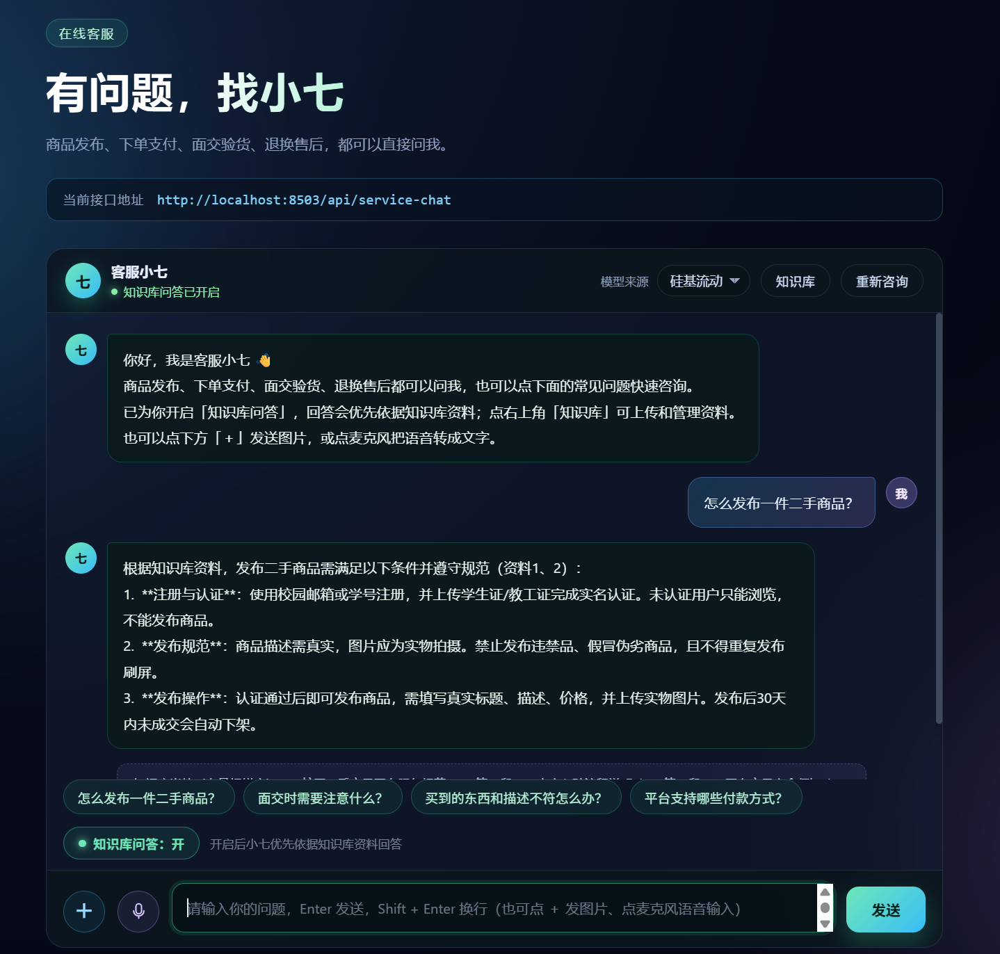
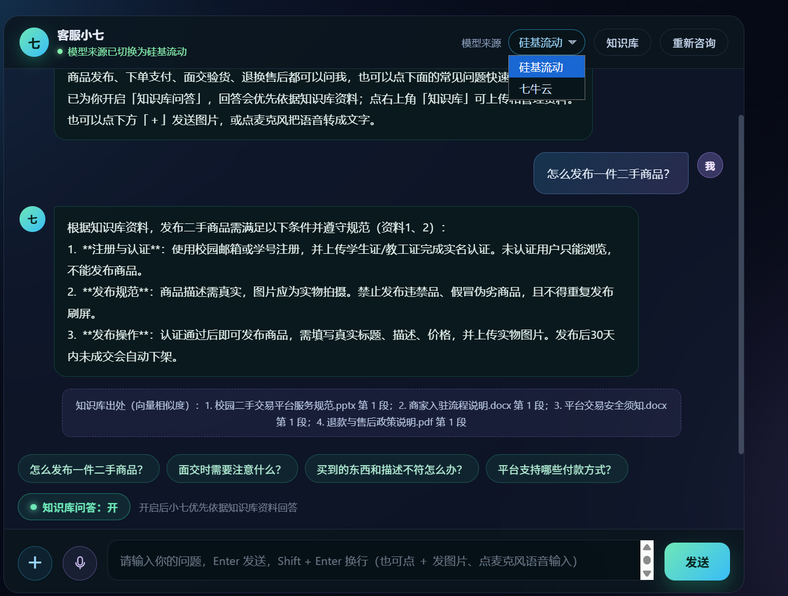
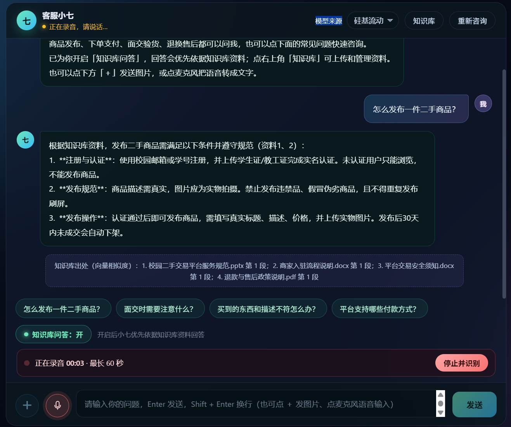
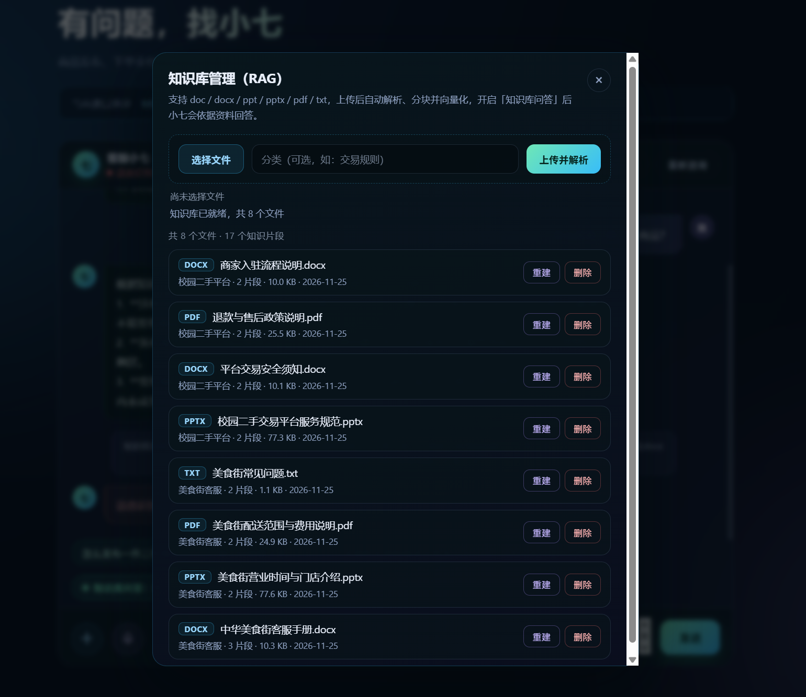
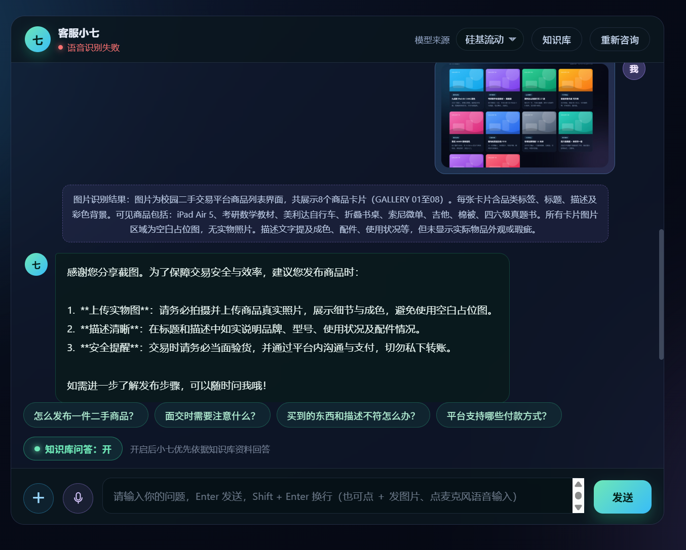

🎯
业务场景
面向校园二手交易平台，覆盖商品发布、下单支付、面交验货、退换售后四类高频咨询，用客服「小七」承接用户的即时应答需求。
把大模型接进真实业务页面：支持知识库增强问答、模型来源切换、图片识别与语音输入。 本页汇总页面完成情况、实测问答结果与测试用例，作为本次 LLM 实践的验收记录。
把「能聊天」做成「能办事」的客服助手
面向校园二手交易平台，覆盖商品发布、下单支付、面交验货、退换售后四类高频咨询，用客服「小七」承接用户的即时应答需求。
前端原生 HTML/CSS/JS 对话界面，后端统一对话接口对接大模型；平台规则类问题通过 RAG 知识库注入上下文，降低模型自由发挥带来的偏差。
页面可独立完成多轮咨询；知识库开关可对比回答差异；图片与语音输入可用；异常输入有兜底提示，整体达到可演示、可复测的完成度。
六项能力均已接入页面并通过实测
气泡式对话列表，支持连续追问；Enter 发送、Shift + Enter 换行，发送后自动滚动到底部。
支持 doc / docx / ppt / pptx / pdf / txt 上传，自动解析、分块并向量化；开启后优先依据资料回答并标注引用编号。
点击「＋」选择图片，自动附带识别请求；待发送图片有缩略图与移除按钮，适合咨询商品成色、瑕疵等问题。
点击麦克风开始录音，最长 60 秒，停止后自动语音转文字填入输入框，方便移动端快速提问。
顶部下拉可在「硅基流动」与「七牛云」之间切换，同一套对话界面适配不同模型服务，便于对比回答风格。
内置发布商品、面交注意事项、描述不符、付款方式四个高频问题，一键提问，降低首次使用成本。
从用户输入到模型流式返回
文字、FAQ 快捷问题、图片或语音转写后的文本。
合并多轮上下文与图片信息，展示发送态与加载态。
请求 /api/service-chat，按所选来源转发至硅基流动或七牛云。
开启知识库问答时，先检索相关片段并注入提示词。
模型逐段返回内容，前端实时渲染并保留引用编号。
真实页面截图与补充实测记录

怎么发布一件二手商品？

在对话窗口右上角切换「硅基流动 / 七牛云」，切换成功后状态栏同步提示，已有多轮对话不受影响。
点击输入框左侧麦克风开始录音，页面顶部状态切换为「正在录音，请说话…」，底部出现计时与「停止并识别」按钮。


支持 doc / docx / ppt / pptx / pdf / txt 六种格式，上传后自动解析、分块并向量化，开启「知识库问答」后小七会依据资料回答。
发送一张商品列表页面截图，小七先输出结构化的图片识别结果，再结合识别内容给出发布建议。

按能力维度分类，可筛选查看
| 测试用例 | 操作步骤 | 预期结果 | 实测结果 | 状态 |
|---|---|---|---|---|
| 知识库问答（开） | 开启「知识库问答」，提问「怎么发布一件二手商品？」 | 依据资料分点回答，并标注引用编号 | 输出注册认证、发布规范、发布操作三点，引用资料1、2 | 通过 |
| 知识库开关对比 | 关闭知识库问答后重复同一问题 | 不再强制引用资料，给出通用建议 | 回答切换为通用说明，引用标记消失 | 通过 |
| 知识库资料管理 | 上传 docx 规则文档，填写分类后提交解析 | 列表出现新资料，状态变为可检索 | 上传后解析成功，知识库共 8 个文件 · 17 个片段，可重建 / 删除 | 通过 |
| 图片识别咨询 | 点击「＋」选择一张商品图片并发送 | 客服识别图片内容并结合问题回答 | 识别出 8 个商品卡片与商品类型，并提示上传实物照片 | 通过 |
| 语音输入 | 点击麦克风录音并停止 | 语音转文字填入输入框，可直接发送 | 录音计时正常，停止后文字回填 | 通过 |
| 模型来源切换 | 在顶部下拉切换硅基流动 / 七牛云后继续提问 | 切换后仍能正常回复，来源标识同步 | 两种来源均返回正常，回答风格略有差异 | 通过 |
| 多轮追问 | 追问「那面交时要注意什么？」 | 结合上一轮上下文继续回答 | 保持同一话题，未出现上下文丢失 | 通过 |
| 异常输入兜底 | 空内容发送、超长文本、接口异常 | 给出提示或禁用发送，页面不崩溃 | 空输入被拦截，异常时显示失败提示 | 通过 |
做得好的地方与下一步改进
平台规则类问题由知识库提供上下文，回答能落到具体条款，并保留资料编号便于核对。
通过提示词约束输出分点、编号和重点加粗，长答案也能快速扫读。
文字、FAQ、图片、语音四条输入路径均可用，覆盖移动端真实使用场景。
空输入、接口失败、权限拒绝都有明确提示，不会出现无反馈的空白状态。